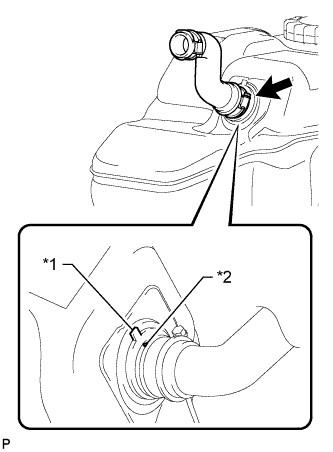
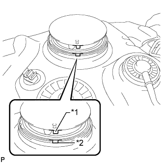
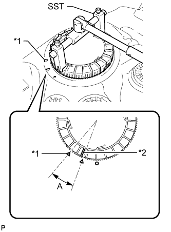
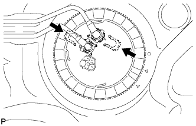
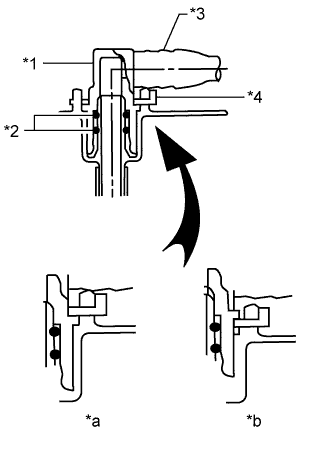

FUEL TANK > INSTALLATION |
| 1. INSTALL FUEL TANK TO FILLER PIPE HOSE |
|  |
Install the fuel tank to filler pipe hose to the fuel tank.
| *1 | Fuel Tank Side Mark |
| *2 | Hose Side Mark |
| 2. INSTALL NO. 3 FUEL TANK PROTECTOR |
Install the No. 3 fuel tank protector and attach the 4 clamps.
Install the 2 bolts.
| 3. INSTALL FUEL SUCTION WITH PUMP AND GAUGE TUBE ASSEMBLY |
Apply a light coat of gasoline or grease to a new gasket and install the gasket to the fuel tank.
|  |
Install the fuel suction with pump and gauge tube into the fuel tank.
| *1 | Protrusion |
| *2 | Groove |
Put a new retainer on the fuel tank. While holding the fuel suction with pump and gauge tube, tighten the retainer one complete turn by hand.
| *1 | Start Mark (Fuel Tank Side) |
| *2 | Start Mark (Retainer Side) |
|  |
Using SST, tighten the retainer until the mark on the retainer is within range A on the fuel tank as shown in the illustration.
| *1 | Fuel Tank Side Mark |
| *2 | Retainer Side Mark |
| 4. INSTALL FUEL TANK MAIN TUBE SUB-ASSEMBLY AND FUEL RETURN TUBE SUB-ASSEMBLY |
|  |
Install the fuel tank main tube and fuel return tube with the 2 fuel tube joint clips.
|  |
| *1 | Fuel Tube Joint |
| *2 | O-ring |
| *3 | Fuel Tube |
| *4 | Fuel Tube Joint Clip |
| *a | CORRECT |
| *b | INCORRECT |
Install the fuel tank main tube and fuel return tube to the fuel tank.
| 5. INSTALL FUEL TANK CUSHION |
Install 3 new fuel tank cushions to the fuel tank.
| 6. INSTALL FUEL TANK SUB-ASSEMBLY |
Set the fuel tank on a transmission jack and lift up the transmission jack.
Install the 2 fuel tank bands with the 2 pins and 2 clips.
Connect the 2 fuel tank bands with the 2 bolts.
| 7. CONNECT FUEL TANK TO FILLER PIPE HOSE |
Connect the fuel tank to filler pipe hose to the filler pipe.
| 8. CONNECT FUEL CUT OFF TUBE |
Connect the fuel cut off tube (Click here).
| 9. CONNECT FUEL TANK BREATHER TUBE SUB-ASSEMBLY |
Connect the fuel tank breather tube (Click here).
| 10. CONNECT FUEL RETURN TUBE SUB-ASSEMBLY |
Connect the fuel return tube (Click here).
| 11. CONNECT FUEL TANK MAIN TUBE SUB-ASSEMBLY |
Connect the fuel tank main tube (Click here).
| 12. INSTALL NO. 1 FUEL TANK PROTECTOR SUB-ASSEMBLY |
Install the No. 1 fuel tank protector with the 6 bolts.
| 13. INSTALL REAR FLOOR SERVICE HOLE COVER |
Connect the fuel pump and fuel sender gauge connector.
Install the rear floor service hole cover with the 3 screws.
| 14. INSTALL REAR SEAT ASSEMBLY LH |
for 60/40 Split Slide Walk-in Seat Type LH Side:
Install the rear seat assembly LH (Click here).
| 15. CONNECT CABLE TO NEGATIVE BATTERY TERMINAL |
| 16. INSPECT FOR FUEL LEAK |
Make sure that there are no fuel leaks after performing maintenance on the fuel system.
Connect the intelligent tester to the DLC3.
Turn the engine switch on (IG) and turn the intelligent tester on.
Enter the following menus: Powertrain / Engine and ECT / Active Test / Control the Fuel Pump / Speed.
Check that there are no leaks from the fuel system.
If there are fuel leaks, repair or replace parts as necessary.
Turn the engine switch off.
Disconnect the intelligent tester from the DLC3.